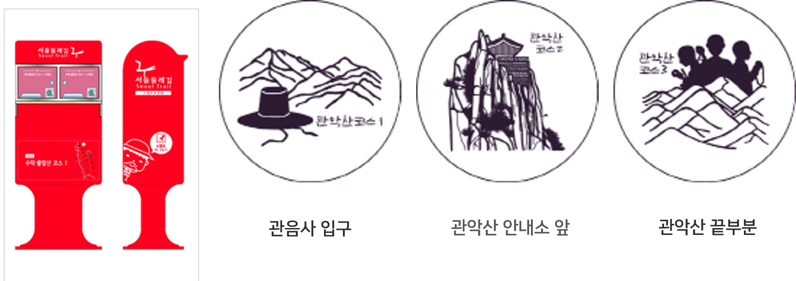

5코스-관악산코스
관악구,금천구 12.7㎞ 5시간 50분 중급
세부코스정보
관악산코스는 사당역에서 출발해 관악산, 삼성산을 거쳐 석수역에 도착하는 코스이다. 관악산과 높은 고도로 등반을 위한 산행이 대부분이지만 본 코스는 관악산의 둘레길을 따라서 걷는 코스로 자연경관이 매우 훌륭하고 곳곳의 역사문화유적이 다양하게 분포하고 있어 볼거리 또한 매우 풍부하다. 대부분의 구간이 숲길로 비교적 난이도가 있는 코스지만 서울의 산림자연환경을 느낄 수 있는 최적의 코스이기도 하다.
교통편
출발지 : 지하철 2호선, 4호선 사당역 4번 출입구
도착지 : 지하철 1호선 석수역 1번 출입구
세부코스
사당역~관악산~삼성산~석수역
관광포인트
- 예로부터 서울 근교 사찰 가운데 영험있는 관음 기도도량 중의 하나였던 '관음사'
- 고려시대 명재상이었던 강감찬이 태어난 장소 '낙성대공원'
- 산 정상에 있으면서도 늘 물의 양이 변함없고, 항상 맑은 상태로 고여있는 '한우물'
- 세 명의 성인 유해가 안장되었던 성지 '천주교삼성산성지'
여행자 정보
- 지하철 2호선, 4호선 사당역 시점 시작
- 낙성대공원에 화장실과 도서관이 있어 잠시 책을 보고 쉬어갈 수 있음
- 무당골에서부터는 관악산 둘레길과 일치하며 주황색 리본은 서울 둘레길, 노란색 리본은 관악산 둘레길을 나타냄
- 서울둘레길안내센터에서 완주증을 받을 수 있음
* 도보인증안내 : http://gil.seoul.go.kr/walk/main.jsp
스탬프 정보

주요 지점 및 추천 장소
강감찬 장군을 기려 조성한 낙성대 공원은 서울특별시 관악구 봉천동에 위치해 있다. 홍살문 안쪽에는 안국사가, 바깥쪽에는 강감찬 동상이 있다. 낙성대공원을 따라서 산책할 수 있는 둘레길도 만들어져있어 여유를 느낄 수 있다.